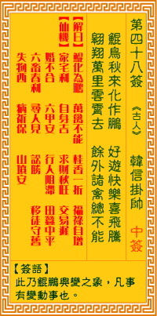

观音灵签第四十八签 【韩信挂帅】 |
 | |||
灵鸟秋来化作鹏 翱翔得意尽飞腾 直冲万里云霄外 任是诸禽总不能 |
||||
| 【吉凶】 | 中签 | 【宫位】 | 亥宫 | |
| 【签语】 | 此卦鲲鹏兴变之象，凡事有变动大吉也。 | |||
| 【解曰】 | 鲲化为鹏 万禽不能 桂香一折 福禄自增 | |||
| 【仙机】 | 此签家宅利，自身吉，求财秋旺，交易迟，婚不合，六甲安，行人阻滞，田蚕中平，六畜春利，寻人见，讼胜，移徙守旧，失物西，病祈 福，山坟安。 | |||
| 【详解】 | 鹍乌在秋天的时节转变为大鹏鸟，尽情得意飞升翱翔;亳无阻碍直上万里之外，听凭众多禽鸟终究无法相比。 鹍鸟化鹏，诸禽不能，桂花时节，财禄百成。此签鹍鸟化鹏之象，凡事兴隆大吉。 本签为鹍乌化鹏之吉象也。凡事皆能兴隆大吉。功名成之。利得之。婚合之。六畜旺之。六甲全之。官事。等等。无一不顺利也。直冲云霄之外。无可与伦比者。惟逢此佳境。勿忘今之所由成。积德。布施之再行者。可维护君尔之谋望无疑。易言之。今之君也。桂花时节财禄成此。 此签有”胆大心细”之意。提醒当事人，智勇兼俱。有些人够勇敢，但不够细心。有些人够细心，却又不够勇敢。那么要如何”有勇有谋”呢?其实平日若能深入细心地观察周遭，就能发现人事物之中细微巧妙的变化，也可以早一步掌握先机、提前准备行动。凡事仔细用心思考，判断事情的轻重缓急。一旦下了决定之后，就不要再犹豫不决，试着勇敢放手一搏。如果因迟疑再三而畏畏缩缩、导致错失良机，岂不叫人徒呼可惜。 | |||
| 【典故】 | 韩信是汉朝初年三杰之一。贫农出身，初在项羽（楚霸王）军中，不得志。后归刘邦，丞相萧何发现韩信很有才华，三番四次推荐他为元 帅，但刘邦不肯。韩信在失望之下，骑马出走。萧何知道了，即刻策马星夜追赶韩信回来，这次说服了刘邦，封他为元帅，并设坛举行隆重挂帅仪式。韩信将兵，多多益善，证明 了他的军事才华。后被吕后所杀。 | |||